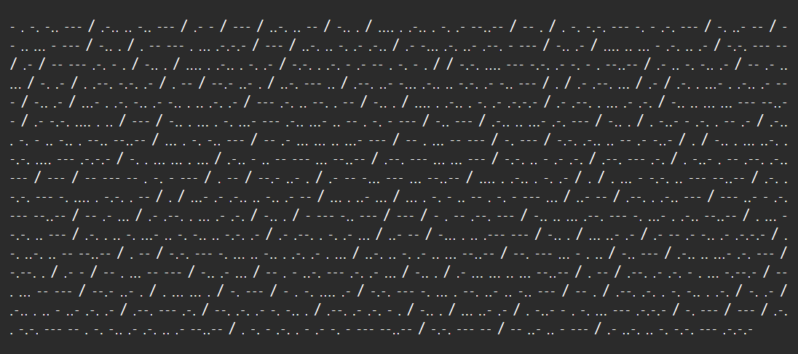

--- .--. .. -. .. ---

/Tradução do Código Morse/
Tendo lido até o fim de Helena, me encontro num misto de emoções. O final abrupto da história com a morte de Helena certamente é chocante, ainda mais na epóca em que foi publicado e após a revelação da verdadeira origem de Helena. Apesar disso, achei o desenvolvimento do livro de extrema lentidez, sendo massivo mesmo no climax e desfecho. Nesses últimos, posso citar por exemplo o momento em que ambos, Helena e Estácio, reconhecem e validam seus sentimentos um pelo outro, mas apesar de todo o tempo disponível, Estácio reinvindica apenas um beijo de sua amada. Enfim, em considerações finais, gostei do livro (e até mesmo das metáforas de Assis, em partes) mesmo que esse não tenha conseguido me prender na leitura por grande parte de sua extensão. Não o recomendaria, entretanto, com muito afinco.